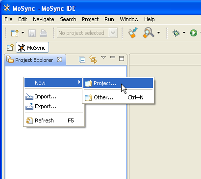
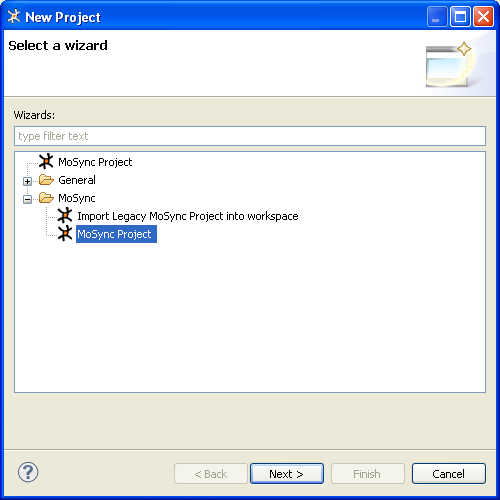
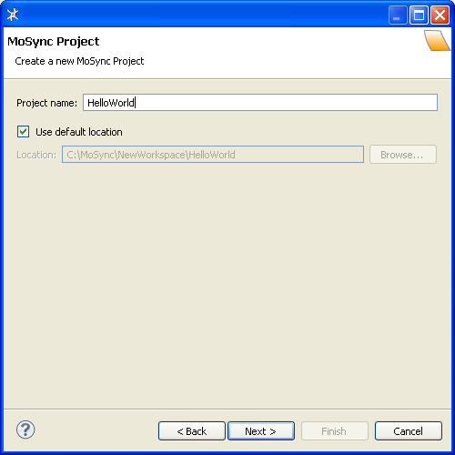

This guide shows you how to create a new application project in the MoSync IDE and describes the project templates that are available to you. It also introduces the concepts of projects and workspaces. We have templates for various types of C/C++ projects, and templates for hybrid HTML/Javascript/C/C++ projects.
The MoSync IDE is based on Eclipse. Eclipse organizes your source code using projects and workspaces. A workspace is a collection of projects. A project is a collection of a set of source files. Projects can be individual applications or modules, depending on how you choose to organize your workspaces. Each project maps to a corresponding directory in the file system.
The different projects in a workspace may map to different file system directories or drives, although, by default, all projects map to subdirectories of a single workspace directory. All files in the workspace are directly accessible to the standard programs and tools of the underlying operating system.
The Project Explorer view in the IDE shows you all the projects in the current workspace and their source files.
In the MoSync IDE, you create a new project by doing one of the following:

When the New Project window opens, expand the MoSync folder:

In the folder MoSync you will find wizards for creating MoSync projects.
Select the one called MoSync Project.
Click Next. A new window will open showing you the templates that are available for you new project:
Select a template type (C/C++ or HTML5), then select one of the available templates.
Click Next. The project name and location screen appears:

Enter the Project name "HelloWorld". (Note: to ensure compatibility with all platforms and devices, avoid using spaces in project names; it is always safe to use the underscore character.)
Tick the Use default location box.
Click Finish.
Your new project will now be created from the template and loaded in the MoSync IDE.
We provide you with many different project templates, adapted to meet the needs of various different application types.
All templates have:
| Template | Languages | Description | Libraries | Heap size | Stack size | Data size |
HTML5/JS WebUI Project | HTML5, JavaScript | Template for HTML5/JS projects that use HTML/CSS for the UI. Access device functionality from JavaScript. | mastd.lib, MAUtil.lib, NativeUI.lib, MAFS.lib, Wormhole.lib yajl.lib Notification.lib | 3072 | 512 | 4096 |
HTML5/JS NativeUI Project | HTML5, JavaScript | Template for HTML5/JS projects that use Native UI. Create the UI in HTML/JavaScript and access device functionality from JavaScript. | mastd.lib, MAUtil.lib, NativeUI.lib, MAFS.lib, Wormhole.lib, yajl.lib, Notification.lib | 3072 | 512 | 4096 |
HTML5/JS/C++ Hybrid Project | HTML5, JavaScript, C/C++ | Template for hybrid HTML5/JS/C++ projects. Extend the application with C/C++ code. Build the UI in HTML/CSS or use NativeUI. | mastd.lib, MAUtil.lib, NativeUI.lib, MAFS.lib, Wormhole.lib yajl.lib Notification.lib | 3072 | 512 | 4096 |
C++ STL Project | C/C++ | A standard ANSI C++ application template consisting of a main file with a small code example and includes the C++ Standard Template Library. | newlib.lib, stlport.lib | 1536 | 256 | 2048 |
C++ Moblet Project | C/C++ | A standard ANSI C++ application template that uses the Moblet event-handling framework. | mastd.lib, MAUtil.lib | 512 | 128 | 1024 |
C++ NativeUI Project | C/C++ | A standard ANSI C++ application template that uses the Moblet framework and the NativeUI Library. | mastd.lib, MAUtil.lib, NativeUI.lib | 3072 | 512 | 4096 |
C++ OpenGL Project | C/C++ | A standard ANSI C++ application template that includes the Moblet framework and basic OpenGL code. | mastd.lib, MAUtil.lib | 3072 | 512 | 4096 |
C Basic Project | C | A standard ANSI C project template consisting of a main file with a small code example. | mastd.lib | 512 | 128 | 1024 |
C NativeUI Project | C | A standard ANSI C application template that has its own event loop and uses the Widget API. | mastd.lib, MAUtil.lib | 3072 | 512 | 4096 |
C Newlib Project | C | A standard ANSI C application template using the Newlib C library. | newlib.lib | 1536 | 256 | 2048 |
Empty Project | No languages | A project template with standard settings but no files, roll your own. | mastd.lib | 512 | 128 | 1024 |